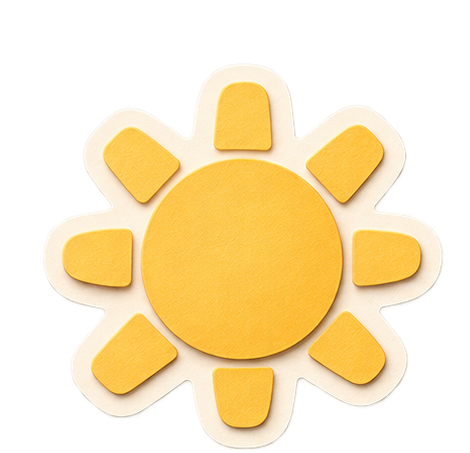

♈
♓
Выбери свой знак
Пара, друзья, семья
NEBO
Гороскоп по знаку
Гороскоп длятвоего знака
Выбери знак и читай прогноз на сегодня
NEBO
Натальная карта
Твоя карта.Понятный разбор.
По дате, времени и месту рождения
NEBO
Совместимость
Что междувами?
Сравни ваши натальные карты